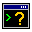

Wat: the jokes about [] + {}
Probably the best-known four minutes ever spent on JavaScript are a comedy routine, and every JavaScript result in it is behaviour the specification requires.
[] + [] // ""
[] + {} // "[object Object]"
{} + [] // 0
{} + {} // NaNThose four lines are the middle of "Wat", a lightning talk Gary Bernhardt gave at the CodeMash conference in January 2012. I ran all four in Node 22 and got those four answers. The last two come with a condition, which the talk leaves out and which I'll get to: they are only true when the line is a statement on its own.
The talk did not invent the genre. A site called wtfjs had been collecting this kind of result for two years, and the oddities themselves were as old as the language. But "Wat" is the version everybody saw, and it fixed the form: type something reasonable, show what comes back, wait for the room. This essay is about where the jokes came from, what each one is really doing, whether they were fair, and what the language did about them.
A blog with one kind of post
In February 2010 a site appeared at wtfjs.com. A line at the bottom of the page says it was "created by Brian LeRoux & Andrew Lunny", and its about page gives the mission: "JavaScript is a language we love despite it giving us so much to hate. This is a collection of those very special irregularities, inconsistencies and just plain painfully unintuitive moments for the language of the web."
The oldest posts are dated February 12, 2010, and each is a few lines long. One reads, in full:
typeof NaN // number, of course.followed by "Now that makes sense." Another shows typeof null // object. A third shows NaN === NaN // false under the line "Some argue this makes sense. Some ppl also like to sniff glue." A fourth is ("foo" + + "bar") === "fooNaN", with the note "Proposal to rename this site: NaNwtf".
The about page describes the plumbing. The first version "was a quick and dirty Tumblr thing". The second was a blog written from scratch in Node, then at version 0.1, and the repository for it begins in May 2010 with a commit titled "happy birthday". After that a post was a Markdown file and a contribution was a pull request. LeRoux had given the PhoneGap talk at the first JSConf the year before, and treated the site as a group effort: the repository holds about 120 posts from dozens of contributors, and the newest one on the site is dated March 2016.
Not all of them are about the language. There are Internet Explorer host-object bugs, a complaint that Firebug won't let you declare a variable called console, and a 2014 entry on document.all, the object whose typeof is "undefined". But the centre of gravity was always type conversion. In February 2011 a GitHub user named dorey published the JavaScript equality table, which its source says was converted from a gist: a grid showing which pairs of values count as equal under ==, with further tabs for === and if(). The line it labels "Moral of the story" is the argument from the JSLint essay in one line: "Always use 3 equals unless you have a good reason to use 2."
Allen Wirfs-Brock and Brendan Eich noticed all this. Their history of the language, "JavaScript: The First 20 Years", has a short interlude on critics, which ends: "Articles that catalog JavaScript's quirks and websites such as wtfjs.com became a Web staple."
Four minutes in Sandusky
CodeMash 2012 was held in Sandusky, Ohio, at what Joey deVilla's write-up of the talk calls "Ohio's largest indoor waterpark". Bernhardt's slot there was a lightning talk, and the caption file on the video ends at four minutes and seventeen seconds. I quote the talk from those captions.
It starts with Ruby, which people forget. Refer to an undefined variable and you get a NameError. Assign one undefined variable to another and you get a NameError. Then:
a = a # => nilI ran it in Ruby 3.3, and it still gives nil. A second Ruby bit uses method_missing to make bare words work as strings, and here Bernhardt is careful: "this is not deserving of wat. This is actually a result of how awesome Ruby is."
Then: "Let's talk about JavaScript." The four lines arrive as a quiz. "What should array plus an array be?" Someone offers an empty array. "I would also accept type error." The answer is the empty string. Array plus object "should obviously be type error, because those are completely disparate types", and gives [object Object]. Then the best line in the talk: "because this is plus-- so you can flip the operands and the same thing comes out." The screen shows 0. Object plus object gives NaN, "so this one's actually right." Then: "Enough making fun of languages that suck. Let's talk about JavaScript."
The closing run starts from Array(16), joins it with the string "wat", and gets a rare concession: "This is actually the only line in this entire presentation that's reasonable." Adding 1 to the string gives "wat1" fifteen times. Subtracting 1 gives this, which I ran:
Array(16).join("wat" - 1) + " Batman!"
// "NaNNaNNaNNaNNaNNaNNaNNaNNaNNaNNaNNaNNaNNaNNaN Batman!"It looks improvised and was the opposite. In the Hacker News thread about the video, Bernhardt explained that the terminal sessions were pre-recorded and cut up in Keynote: "There are 37 slides in that four-minute talk." A commenter there identified the console as jsc, the command-line shell of Safari's JavaScript engine.
The video went up on Bernhardt's screencast site, Destroy All Software, and reached Hacker News by January 18. A second submission on January 26 passed 500 points. The next day somebody asked Stack Overflow to explain the results, and the day after that deVilla's post went up, with a note that it also ran on Shopify's technology blog. The page hosting the video carries a one-line disclaimer that most of the later argument ignored: "This talk does not represent anyone's actual opinion."
What the plus sign actually does
The addition operator's rule is one step of an operation the current specification calls ApplyStringOrNumericBinaryOperator. Convert both operands with ToPrimitive. Then: "If leftPrimitive is a String or rightPrimitive is a String", convert both to strings and return "the string-concatenation". Otherwise treat both as numbers. So + never looks at what you gave it, only at what your operands turn into.
ToPrimitive, for an ordinary object and no stated preference, tries two methods in order: "valueOf", then "toString". An array's valueOf returns the array, which is still an object, so the engine moves on to toString. For an array that method calls join, and for a plain object it produces the famous tag:
String([]) // ""
String({}) // "[object Object]"
[1, 2] + [3] // "1,23"That is the first two lines of the talk. An empty array joins to an empty string, and two empty strings concatenate to an empty string. An empty string plus "[object Object]" is "[object Object]". The audience member who guessed "empty array" assumed + has an array meaning. It has two meanings, and an array reaches it only as a string.
The Batman line is the same rule seen from the other side. "wat" + 1 has a string operand, so it concatenates. Subtraction has no string meaning at all, so "wat" - 1 converts both sides to numbers and yields NaN. Then join turns its separator into the string "NaN" and puts it between sixteen empty slots, which makes fifteen of them. The captions have Bernhardt saying the bare array prints as "16 commas"; it prints as fifteen, for the same reason.
The block nobody mentioned
The third and fourth lines are a different trick. The statement grammar has a note attached to expression statements: one "cannot start with a U+007B (LEFT CURLY BRACKET) because that might make it ambiguous with a Block." So a line that begins with {} begins with an empty block, and what follows is a separate expression with a unary plus on the front. The specification's note on that operator is brief: it "converts its operand to Number type."
{} + [] // 0
+[] // 0
({} + []) // "[object Object]"
var o = {} + []; o // "[object Object]"
{} + {} // NaN
({} + {}) // "[object Object][object Object]"I ran each of those. The first and fifth give those answers only as whole statements, which is how node -p and eval treat them and, by the Hacker News thread's account, how jsc and Chrome's console treated a typed line in 2012. Wrap them in parentheses, assign them, or pass them to console.log, and {} is an object again. So + was never non-commutative. No object was added to anything in line three: the array became "" and the empty string became 0. In line four the object became "[object Object]", which is not a number.
Bernhardt knew. When a Hacker News commenter called the result a console bug, the reply was: "By wrapping in parenthesis, you're making it an expression. When you just say "{}+[]" in e.g. Chrome, the first {} is parsed as a block." And then: "I didn't mention any of this in the talk (it would've killed the flow ;)."
Why the language is like this
The conversions were requested. The history paper is plain about it: "Automatic coercions were intended to lower the entry barrier for the initial adoption of JavaScript as a simple scripting language." Some were added after the first ten-day sprint because Netscape's own early users asked. They wanted an HTTP status of "404" to compare equal to the number 404, and they wanted "automatic coercion of empty strings to 0 in numeric contexts, providing a default value for empty fields of HTML forms." That second request is line three of the talk. {} + [] is 0 because an empty form field was supposed to count as zero.
There was nothing else for + to do. The talk's preferred answer is a type error. JavaScript 1.0 could not give one in any way a script could handle: the history paper's table of features "not present in JavaScript 1.0" includes the try statement. My reading is that a scripting language with no way to catch an error had good reasons to return something, and a string was the something.
The fix was tried, and reverted. This is the part I think the jokes miss. The paper records that "Brendan Eich decided to fix == in JavaScript 1.2 by eliminating most of its automatic coercions", in 1997. It did not survive contact with the standard. Shon Katzenberger of Microsoft "successfully argued that it was too late to make such a change given the large number of existing Web pages it would break", and Eich "reverted to the original semantics" in JavaScript 1.3. The language was two years old and already could not take it back. What it got was a second operator: === appears in a Microsoft proposal from 1997 and in the third edition of the standard.
Some of it was never JavaScript's. 0.1 + 0.2 is 0.30000000000000004 in any language that uses binary floating point, and there is a whole website, 0.30000000000000004.com, that lists them, under the heading "Your language isn't broken, it's doing floating point math." NaN not equalling itself is the same standard's rule, and the specification's Number::equal starts "If x is NaN, return false." The history paper notes that for many beginners the browser is where they first meet these things, and they "typically assume that those problems are unique to JavaScript."
And some of it was an accident. typeof null is the honest example. Eich's recollection in the paper is that it leaked out of "the original Mocha implementation", where null carried the same internal tag as objects. MDN records that "A fix was proposed for ECMAScript (via an opt-in), but was rejected."
Explaining the joke, and arguing about it
The first response to "Wat" was homework. The Stack Overflow question, "What is the explanation for these bizarre JavaScript behaviours mentioned in the 'Wat' talk for CodeMash 2012?", was posted on January 27, 2012 by someone who had tried the lines in a JSFiddle and got different answers. A user called Ventero replied within the hour, walking through each result by section number of the standard, block statement included. That answer has more than 1,500 votes. It set a pattern, and when Denys Dovhan started a new wtfjs list on GitHub in July 2017, crediting LeRoux for "the original idea", the entries came with explanations and, often, links to the clause responsible. One of them is the banana:
"b" + "a" + +"a" + "a" // "baNaNa"Dovhan's list calls it "an old-school joke in JavaScript, but remastered", and gives the original as "foo" + +"bar", which is the wtfjs post from February 2010.
The second response was to say the jokes were unfair. Kyle Simpson's book You Don't Know JS: Types & Grammar spends a long chapter on it. Of the equality algorithm, Simpson writes: "I think you'll be surprised at just how reasonable it is." Of the contrived examples: "Don't fall into the "my programming language should protect me from myself" fallacy." The chapter's position is that implicit conversion has good parts, and that "Potential abuses of a mechanism are not sufficient evidence to condemn the mechanism."
I think both sides have a point and they are different points. Nobody ships [] + {}. It is very easy to ship a total that reads "10020" because one operand came out of a form field as text. The talk's examples are absurd, but they are a reduction of a real bug to its smallest form. Bernhardt's own answer, to a commenter who called the sleight of hand "tasteless", was shorter: "It's a joke. Relax."
Day to day, people coped the way the linters told them to. ESLint's eqeqeq rule explains that == follows "the rather obscure Abstract Equality Comparison Algorithm", and a second rule, no-implicit-coercion, exists to "flag shorter notations for the type conversion".
What it left behind
Node's prompt quietly rewrote the punchline. Type {} + [] at the Node 22 prompt and you get '[object Object]', not 0. The reason is in the REPL's source: if the input looks like an object literal, a comment says, "Add parentheses to make sure `code` is parsed as an expression". The Hacker News thread shows Node already disagreeing with jsc in January 2012. So the most quoted line of the talk depends on which prompt you use. Nothing in the language changed. A tool decided that what people meant mattered more than what the grammar said.
New types mostly refuse to play. The old conversions can't be removed, for the reasons in the Annex B essay; the history paper adds that changing typeof null "would not be subtractive", so even strict mode couldn't take it. But nothing obliges new features to join in:
1n + 1 // TypeError
Symbol() + "" // TypeErrorNode's message for the first is "Cannot mix BigInt and other types, use explicit conversions". The committee's actual response to a decade of coercion jokes, as I read it, was to stop extending the behaviour: the two primitive types added since, Symbol and BigInt, throw here where the 1995 types would have guessed (BigInt still concatenates with a string and still == a Number: 1n + "" is "1" and 1n == 1 is true). Meanwhile the old machinery got an official handle. ECMAScript 2015's Symbol.toPrimitive lets any object decide what + sees, and the specification's note observes that of the built-ins only Dates and Symbols use it.
"I would also accept type error" came true. I gave the talk's lines to TypeScript 6. [] + {} is rejected: "Operator '+' cannot be applied to types 'never[]' and '{}'." "wat" - 1 is rejected too. TypeScript's handbook opens its case with the same genre, noting that "Every language has its own quirks" and offering "" == 0 as exhibit one. The banana still compiles, since unary plus on a string is allowed. And the page that hosts "Wat" now carries a plug for Execute Program, a set of interactive courses listed among the site's own products. The first course it names is TypeScript.
The same rules became an encoding. In July 2012 Martin Kleppe published JSFuck, which writes any program using six characters, []()!+. It is "Wat" run in reverse: ![] is false, ![]+[] is the string "false", +[] is 0, so (![]+[])[+[]] is "f", and from enough letters you can spell a function's name and call it. The site credits an "Original discussion at Sla.ckers.org", a security forum, and I take the practical use to be getting script past filters that look for letters. The conversions people laughed at turned out to be complete enough to program in.
The takeaway
"Wat" and wtfjs were jokes about a language whose designers had been asked, early on, to make a web form's empty text box behave like zero, and who found by 1997 that they could not undo it. Every famous result is the specification working as written: + has two meanings and picks by what the operands convert to, objects convert through toString, and a line that starts with a brace starts with a block. The jokes were unfair in the details. Two of the four lines add nothing to an object, and several favourites belong to floating point. They were fair about the thing that mattered, which is that a reasonable programmer's guess was wrong every time.
What the laughing achieved is easy to underrate. It made the conversion rules common knowledge, and I suspect a great many people know what ToPrimitive does only because someone explained a punchline to them. It gave teams a four-minute argument for ===, linters and eventually a type checker. And it showed the committee what not to repeat, so that Symbol won't turn into a string and BigInt won't mix with Number. The old behaviour is permanent, and [] + {} will be "[object Object]" for as long as there are browsers. The joke worked because everyone in the room had, at some point, been the person who guessed.
What I couldn't verify
- I did not watch the video of "Wat": I quote it from the caption file on its own page, which has transcription slips, and I take what appeared on screen, the jsc console and the exact " Batman!" line from the Stack Overflow question and Hacker News comments written that week.
- I date the talk to January 2012 from the conference's name and from write-ups and Hacker News submissions dated January 18 to 28; I found no page giving the day it was delivered.
- That wtfjs began in February 2010 rests on the dates of its oldest posts and its own about page; I never saw the original Tumblr site, "about 120 posts" and "dozens of contributors" are my counts from the repository, and that Brian LeRoux spoke on PhoneGap at the first JSConf rests on the JSConf essay in this collection, not on a source I opened for this one.
- Stack Overflow and GitHub refused my direct requests, so I read the question and answer through the Stack Exchange API and the repositories as clones; the vote and point counts are what those services reported on the day I looked.
- Three claims are my own inference: that the missing try statement helps explain why + returns a string, that making Symbol and BigInt throw was the committee's answer to the coercion jokes, and that JSFuck's practical use is evading filters. I did not open the Sla.ckers.org discussion JSFuck credits, and I found no first author for the banana joke beyond what Denys Dovhan's list says.
Sources and further reading
- Wat, Gary Bernhardt, lightning talk at CodeMash 2012, with its caption file (archived)
- Wat, Hacker News discussion, January 26, 2012, with comments by Gary Bernhardt (archived)
- What is the explanation for these bizarre JavaScript behaviours mentioned in the 'Wat' talk for CodeMash 2012?, Stack Overflow, question by NibblyPig and answer by Ventero, January 27, 2012 (archived)
- WAT? A Funny Look at Ruby and JavaScript Oddities and JavaScript Oddities from the WAT Video, Explained, Joey deVilla, Global Nerdy, 2012 (archived)
- wtfjs and its about page, Brian LeRoux, Andrew Lunny and contributors, 2010 to 2016 (archived)
- brianleroux/wtfjs, the site's repository, 2010 to 2020 (archived)
- JavaScript Equality Table, dorey, 2011 (archived)
- What the f*ck JavaScript?, Denys Dovhan and contributors, 2017 onwards (archived)
- JSFuck, Martin Kleppe, 2012 (archived)
- Floating Point Math, 0.30000000000000004.com (archived)
- JavaScript: The First 20 Years, Allen Wirfs-Brock and Brendan Eich, 2020 (corrected 2021) (archived)
- ECMAScript Language: Expressions, Ecma TC39, current draft (see 13.15.3, ApplyStringOrNumericBinaryOperator, and 13.5.4, Unary + Operator) (archived)
- ECMAScript: Abstract Operations, Ecma TC39, current draft (see 7.1.1, ToPrimitive, and 7.2.13, IsLooselyEqual) (archived)
- ECMAScript Language: Statements and Declarations, Ecma TC39, current draft (see 14.5, Expression Statement) (archived)
- ECMAScript Data Types and Values, Ecma TC39, current draft (see Number::equal) (archived)
- ECMA-262, 3rd edition, Ecma, December 1999 (PDF; see 11.9.4, the Strict Equals Operator)
- typeof, MDN Web Docs (archived)
- You Don't Know JS: Types & Grammar, chapter 4, "Coercion", Kyle Simpson, first edition (archived)
- eqeqeq and no-implicit-coercion, ESLint documentation (archived)
- TypeScript for the New Programmer, TypeScript handbook (archived)
- lib/repl.js, Node.js, v22.x branch (archived)
Spot a mistake? Open an issue and it will be checked and corrected.
View source · Edit history